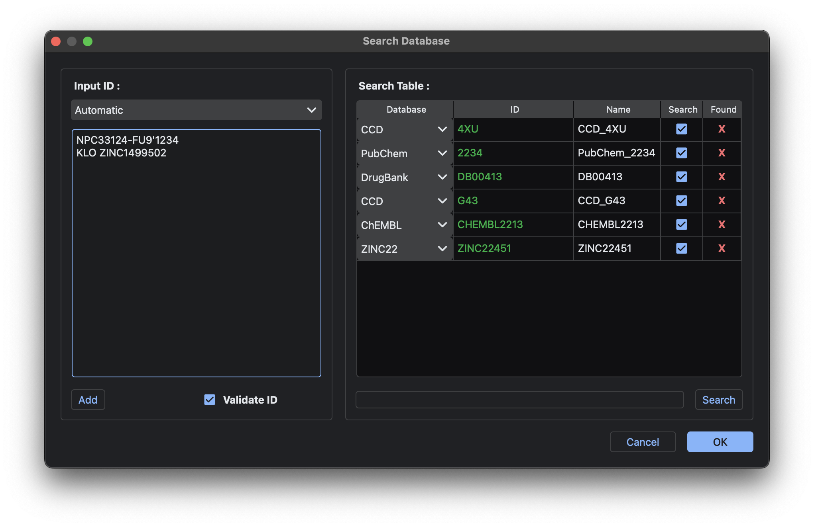

Molecule Preparation¶
The Converter module is the main tool for molecule preparation. It can import, download, draw, compare, sample, filter, and convert input molecules.
Input Molecules¶
The Converter offers three methods to input molecules: Local Import, Database Search, and Draw Chemicals.
Local Import¶
The Converter can import and read various chemical formats locally, including:
- SDF
- MOL
- MOL2
- PDB✝
- PDBQT*
- SMI (SMILES) ^
- MRV
- XYZ✝
✝ These formats often include only coordinates and lack bond and stereochemistry information, so they are not recommended.
* Can only process Meeko-generated PDBQT.
^SMI is not a universal format, so Converter can only read SMI format generated by MolDocker. MolDocker SMI format is a space-separated tabular file with the first and second column representing SMILES the name of said molecule, respectively.
Users can select chemical files directly or the directory containing the desired molecular files using the Browse Files or Browse Dir. button, respectively. Files and directories can also be dragged & dropped into the list.
In addition to these chemical files, some databases store SMILES or InChI strings inside a CSV or TSV file. To read these formats, click the Read Table button to select the tabular file.
After selecting the CSV/TSV file, a dialog will pop up asking the user to input the column separator. The default separator for CSV files is , (comma), while \t (tab) is the default separator for TSV files. Some databases, such as ChEMBL, use ; (semicolon) as their CSV separator. If the preview table does not look as expected, check the tabular file manually for the correct separator.
Database Search¶
The Converter can download molecules from various databases using their respective IDs. By selecting Convert Utilities → Search Databases, users can open the database search dialog. Currently, MolDocker supports querying the following databases:
- CCD (Chemical Component Dictionary)
- BIRD (Biologically Interesting Molecule Reference Dictionary)
- PubChem
- ChEMBL
- ChEBI
- DrugBank
- ZINC22
- NPASS
- SuperNatural 3.0

Users can input database IDs into the left textbox and press Add to include them in the table on the right. To specify which database the IDs belong to, select the corresponding database name in the dropdown menu above the textbox. If Automatic is selected, MolDocker will determine the target database based on the ID's syntax. Characters other than alphabet, number, _ (underscore), and : (colon) are interpreted as separators for IDs. To remove molecules, select the relevant row and press backspace.
For the example figure above, the IDs NPC33124, FU9, 1234, KLO, and ZINC1499502 will be added to the table.
Users can modify the Database, ID, and Name of each molecule by double-clicking to edit the cells in the table. However, the Name must be unique; MolDocker will throw an error if a duplicate name is found.
Press Search to start the search for molecules with the Search checkbox ticked. Found molecules are marked as ✓, and not found molecules are marked as X in the Found column. The Database and ID of found molecules are locked and cannot be changed. Molecules marked as not found likely correspond to non-existent IDs, even if the syntax is correct. Press Ok to pass the molecules back to the Converter.
Draw Chemicals¶
The Converter integrates with rdeditor, allowing users to draw and design small molecules within MolDocker. Select Convert Utilities → Draw Chemicals to create your own molecules.
Molecule names can be specified in the Name section, with the SMILES field displaying the current SMILES string. Users can also paste desired molecules by entering their SMILES string into the SMILES field. Press Ok to send the molecules back to the Converter for further processing.
Compare Molecules¶
The Converter can compare the similarity of input molecules against local databases created by the user. These databases can be generated in MolDocker by saving molecules in the .mddb (MolDocker Database) format.
To compare input molecules against local databases, press the Filters button to open the Filter popup dialog.
In the Database Similarity section (bottom right), press Add or Drag & Drop local .mddb databases into the list. Users must specify a Similarity Range to include/exclude matched molecules. For example, a range of 0.6~0.9 with include will retain molecules with 0.6 ≤ Max_Sim ≤ 0.9, where Max_Sim is the maximum similarity of an input molecule against all molecules in the databases. Selecting exclude removes molecules matching this range.
For more details on configuring similarity metrics and fingerprinting methods, refer to the Similarities and Fingerprints section in General Utilities.
Sample Molecules¶
The Converter offers two sampling methods: random sampling and diverse sampling.
To sample molecules, press the Filters button to open the Filter popup dialog.
In the Sampling section (top right), enable random or diverse sampling by selecting the desired method in the dropdown menu. Diverse sampling is implemented using RDKit's MaxMinPicker. Users must also provide a random number generator seed (Seed) and the number of samples (Num).
Filter Molecules¶
The Converter can filter molecules based on molecular properties and substructures.
Molecular Properties¶
Available property filters include:
- Molecular weight
- Hydrogen bond donors
- Hydrogen bond acceptors
- LogP (RDKit SLogP)
- Topological polar surface area
- Rotatable bonds
- Number of rings
- Formal charge
- Number of heavy atoms
- Molar refractivity
- Number of atoms
- Quantitative estimate of drug-likeness (QED)
Substructures¶
Predefined substructures include:
- PAINS
- BRENK
- NIH
- ZINC
- CHEMBL subsets (e.g., BMS, Dundee, Glaxo)
- Custom substructures (SMARTS strings)
To apply filters, press the Filters button to open the dialog. Users can check the desired filters and choose Ignore, Partial, or Exact matching. Partial matches can be adjusted using the Partial Filter Threshold, which specifies the minimum number of matching filters required.
MolDocker also includes predefined property filters, such as Lipinski's Rule of Five, Veber's Filter, Egan's Filter, and more.
Filters are processed independently and sequentially, starting with property filters and then substructure filters.
Convert Molecules¶
The Converter supports conversion to various formats, including:
- PDBQT: For AutoDock VINA, QuickVINA 2, and others.
- SDF: Common format.
- MOL: Common format.
- MOL2: For LeDock.
- XYZ: Common format.
- SMI: SMILES format.
- CSV: For DiffDock.
- PNG: Image format.
- MDDB: For MolDocker databases.
MolDocker saves molecules as individual files, except for SDF, SMI, CSV, and MDDB, which can be saved as single files. File names are based on molecule names, with numbering to avoid duplicates.
Users can also specify custom naming schemes for SDF files by selecting Convert Utilities → SDF Props as Name and inputting property names to overwrite default names.